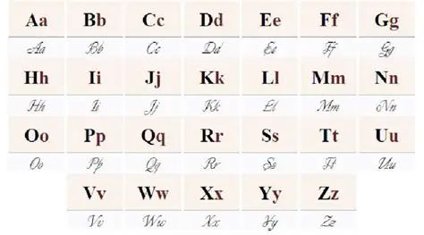

Ағылшын сабағы
Сәлеметсізбе құрметті клиент
Сізді көргенімізге өте қатты қуаныштымыз!
Біздің программамызда сізді барынша ағылшын тілімен таныстырамыз
Біздің бірінші сабағымыз ағылшын тілінің әліпби туралы болады
Ағылшын әліпбиінде барлығы 26 әріп бар
- 
- Көріп тұрғаныздай біздің қазақ тілінен қарағанда аз әріп, бар болғаны 26 әріп бар
Әр әріпке қысқаша ақпарат
- Aa-әліпбидін алғашқы әріпі. Мысалы: cat, apple, pineapple. Сіз оны тағы да сөйлемдерде "a және an" ретінде көре аласыз. Бұны біз нақты емес деп атайды. Мүмкін сіз түсінбей тұрған шығар. Мен сізге былай түсіндірейін мысалы сіздің есінізде нақты бір зат болмаса немесе нақты сенімді болмасаныз сол кезде a мен an ді қолданылады. Мысалы: a cat, an apple, a pineapple.
- Bb- әліпбиде екінші болып тұрады. Мысалы: bus, bird, blue.
- Cc- әліпбиде үшінші болып тұрады. C- бір ерекшелігі ол кейбір кезде с болып оқылады кейбір кезде к болып оқылады.Мысалы: cat, .... .
- Dd- әліпбиде төртінші болып тұрады. Мысалы: dark, drive, drink.
- Ee- әліпбиде бесінші болып тұрады. Мысалы: electric, eat, epic.
- Ff- әліпбиде алтыншы болып тұрады. Мысалы: fire, flower, freeze.
- Gg- әліпбиде жетінші болып тұрады. Мысалы: glass, green, great.
- Hh- әліпбиде сегізінші болып тұрады. Мысалы: hard, hair, happy.
- Ii- әліпбиде тоғызыншы болып тұрады. Мысалы: ice cream, ice, invite.
- Jj- әліпбиде оныншы болып тұрады. Мысалы: jazz, juice, just.
- Kk- әліпбиде он бірінші болып тұрады. Мысалы: knight, keys, kitchen.
- Ll- әліпбиде он екінші тұрады. Мысалы: lost, left, leg.
- Mm- әліпбиде он үшінші болып тұрады. Мысалы: Monday, marry, mountians.
- Nn- әліпбиде он төртінші болып тұрады. Мысалы: nice, night, new.
- Oo- әліпбиде он бесінші тұрады. Мысалы: open, order, ocean.
- Pp- әліпбиде он алтыншы тұрады. Мысалы: pen, paw, princess.
- Qq- әліпбиде он жетінші болып тұрады. Мысалы: quite, quest, queen.
- Rr- әліпбиде он сегізінші болып тұрады. Мысалы: red, respest, rule.
- Ss- әліпбиде он тоғызыншы болып тұрады. Мысалы: sun, second, say.
- Tt- әліпбиде жиырмасыншы болып тұрады. Мысалы: teets, take, three.
- Uu- әліпбиде жиырма бірінші болып тұрады. Мысалы: under, understand, umbrella.
- Vv- әліпбиде жиырма екінші болып тұрады. Мысалы: visit, video, voice.
- Ww- әліпбиде жиырма үшінші болып тұрады. Мысалы: windows, win, write.
- Xx- әліпбиде жиырма төртінші болып тұрады. Мысалы: fox, x-ray, tax.
- Yy- әліпбиде жиырма бесінші болып тұрады. Мысалы: yellow, yes, young.
- Zz- әліпбиде жиырма алтыншы болып тұрады. Мысалы: zebra, zero, zoom. Z өзгелерден ерекшелігі ол егер zh болып бірігіп кетсе ол ж болып оқылады. Мысалы: zhaz.